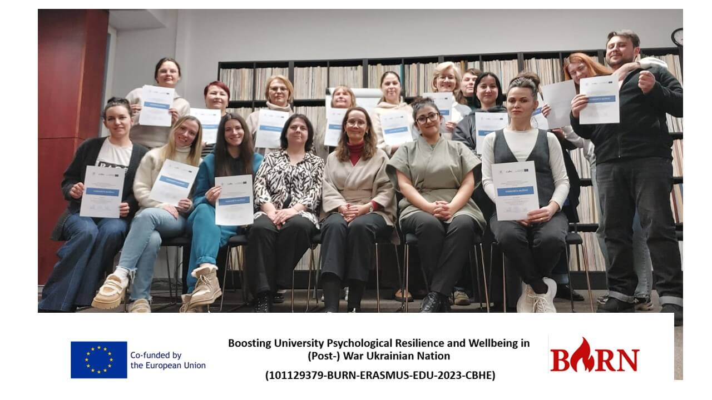

Study Visit to Estonia & Peer-Group Supervision Workshop (Tartu, March 12, 2025)
Last week, we had the incredible opportunity to engage in a peer-group supervision workshop and a study visit to Estonia, deepening our expertise in structured supervision models and trauma-informed counseling practices.

Key Highlights:
- Peer-Group Supervision Model and Cards Use – Led by Tõnu Jürjen, we explored structured supervision tools to enhance collaborative problem-solving and peer feedback.
- Interactive Peer-Group Supervision Sessions – Facilitated by Sharipha Rzayeva and Anu Leuska, these sessions encouraged open reflection and professional growth through guided discussions and case analysis.
- Expert Insights on Trauma and Psychological Support – Inga Ignatieva, clinical psychologist at Meliva Tartu Clinic, provided valuable perspectives on counseling strategies for trauma survivors.

Key Takeaways from the University of Tartu:
- Gained a complex and deeper understanding of the Counselling Centre’s work approaches and services.
- Developed a multidisciplinary perspective on trauma and supervision.
- Explored the applications of music therapy and art therapy in mental health support.
- Strengthened skills in working with trauma survivors and organizing psychological support services.
These engagements were an inspiring step forward in refining peer supervision practices and fostering collaborative learning environments for psychological support professionals. A huge thank you to our esteemed trainers, facilitators, and partners for making this exchange a meaningful one!
